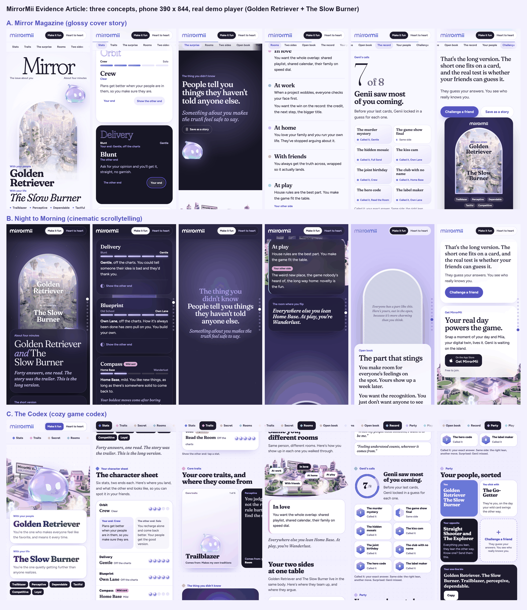

The Evidence Article, three ways
After the Stories reveal, the result opens into a long-read the player can come back to. One real demo player (Golden Retriever, The Slow Burner), run through the app's own scorer. Every line is library copy picked by that player's evidence, plus a few new frames listed in ARTICLE-DESIGN.md. Try both voices.
A. Mirror Magazine
A glossy cover story: masthead, the mirror arch over it, stat cards that turn to show the other end, pull quotes you can save as a story.
Codex jury 7.50. Self 7.58.
OpenHeart to heartB. Night to Morning
A cinematic scroll from the night of the reveal into the island's morning: fog to wipe, a stat gem, a reflection that turns upright.
Codex jury 7.21. Self 7.48.
OpenHeart to heartC. The Codex
A cozy game codex: stat block with drawers, holo trait cards, an island map of your rooms, achievements, and a party with a slot for a friend.
Codex jury 7.54. Self 7.59.
OpenHeart to heartRecommendation: A's skin on C's bones
Build the editorial look of A, with C's review structure (section tabs, stat drawers that keep your end in view, the room map, the party slots) and one signature from B (the sky moving from night to morning). Details, goods and bads in quiz64/docs/ARTICLE-DESIGN.md.

Data: data.json, built by build-data.mjs from quiz64 session.js and views.js. New copy: article-copy.json. Shared model: shared.js.